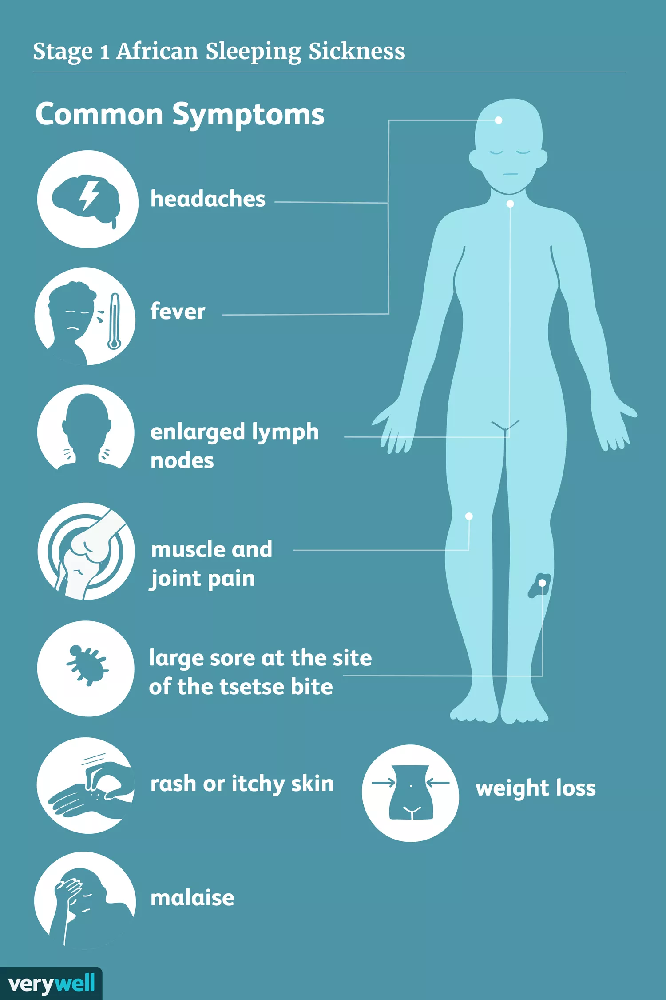

How can African Trypanosomiasis be treated?There are two types of manifestation stages in human Africa trypanosomiasis: First, an early hemolymphatic stage that then will convert into a meningoencephalitis stage (Cleveland Clinic, 2024). The initial symptoms we can see with this disease are or can include fever, headache, joint pain, and itching. Symptoms can progress to neurological complications such as sleep disturbances, confusion, and coma in the later stage (CDC, 2023). To be diagnosed, several ways rely on clinical presentation such as blood or cerebrospinal fluid examination using microscopies, apart from serological tests (WHO, 2024). Depending on the stage and subspecies of the parasite you have, different treatment options include medications such as pentamidine, suramin, melarsoprol, and eflornithine (Hopkins Medicine, 2024). Human African trypanosomiasis is usually lethal if left untreated (WHO, 2024). If a person recovers from African trypanosomiasis, there can be long-term effects, including potential permanent neurological damage (CDC, 2024). Lack of resources and facilities for healthcare in the places afflicted by African trypanosomiasis suggests serious social and economic issues (CDC, 2023). This disease does not affect only individual health but also agricultural productivity and obstructs socioeconomic development (WHO, 2024). There are several controls to decrease disease transmission and morbidity: vector management such as insecticide spraying, use of bed nets, and environmental modification to reduce tsetse fly breeding sites (Maxfield and Bermudez, 2023). Additionally, case detection and treatment strategies are essential components of control efforts (Maxfield and Bermudez, 2023). However, challenges such as drug resistance, limited surveillance, and economic barriers make it difficult to apply effective control and eradication initiatives (Cleveland Clinic, 2024). |

|